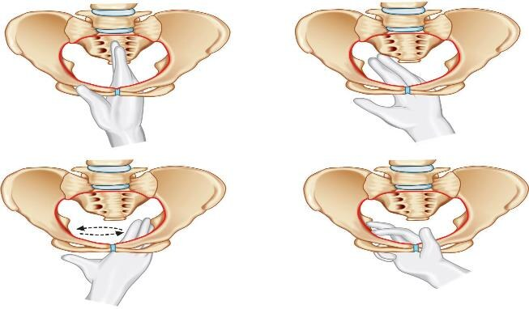
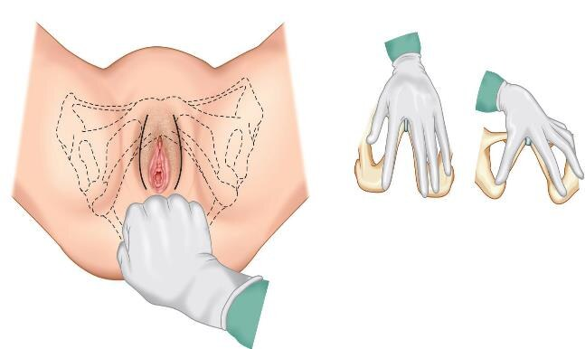
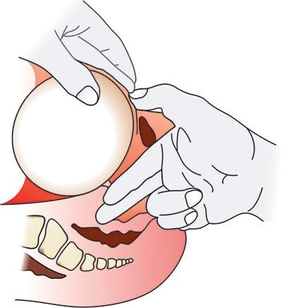

A contracted pelvis is one in which one or more of the principal pelvic diameters is reduced below normal — with consequences for engagement, mechanism, and mode of delivery. This chapter covers definitions, etiology (congenital and acquired), the four-level classification (inlet / midpelvic / outlet / both), four degrees of contraction, diagnostic workup (Pinard & Muller–kerr tests + clinical + imaging pelvimetry), complications, and the trial-of-labor decision.
By the end of this chapter the student should be able to:
To understand the anatomical and obstetric definition of contracted pelvis
To be able to outline various forms of female pelves
To be able to describe etiologies, clinical picture and management of contracted pelvis
📝 NOTE — Chapter aim
The chapter explicitly asks the student to outline (i.e. recognise & name) the different pelvises — not only the contracted forms. Mastery of the 4 congenital forms (Naegele, Robert, High / Low assimilation) plus the 3 levels of contraction is the core recall task.
2Definition
🟣 KEY DEFINITION · Anatomical
"a pelvis in with one or more of its diameters is reduced below normal by one or more centimeters."
— Verbatim source (Book Obstetrics 2025-2026, p. 183). Note: source phrasing contains the preposition "in with" — preserved as printed.
🌸 CLINICAL PEARL · Obstetric (the one that matters)
"a pelvis that is abnormally small in one or more of its principal diameters that interferes with normal childbirth and the normal mechanism of labor."
Why obstetric > anatomical: the anatomical definition can be satisfied by a tiny reduction that has no labour impact; the obstetric definition explicitly couples the small diameter to interference with childbirth — only the obstetric form changes clinical management.
💡 MEMORY ANCHOR · Two faces, one disease
Anatomical → measure (≤ normal by ≥ 1 cm)
Obstetric → consequence (interferes with mechanism)
The anatomical definition of contracted pelvis is:
Anatomical: diameters reduced ≥1 cm below normal. Obstetric definition adds: interferes with normal childbirth.
Which definition of contracted pelvis is more clinically relevant?
The obstetric definition is more relevant because it couples the small diameter to interference with childbirth — this changes clinical management.
Which of the following is a key concept?
Understanding key concepts is fundamental to clinical management.
In obstetric practice, this knowledge helps:
Comprehensive knowledge enables prevention, early diagnosis, and optimal management.
Which of the following best defines this condition?
A definition describes the essential nature of a condition as a deviation from normal.
📝 Question 1 of 2 | 🔴 Hard
What percentage/value is stated in the following: "C · Pelvic Outlet Contraction (1%) Definition: bituberous diameter < 8 cm + narrow subpubic angle (normally 90°-100°)"?
The text states: C · Pelvic Outlet Contraction (1%) Definition: bituberous diameter < 8 cm + narrow subpubic angle (normally 90°-100°) Clinical diagnosis: Subpubic angle doesn't admit 2 fingers Bituberos doesn't admit 4 knuckles AP diameter of the outlet < 13 cm Effect: ↑ Incidence of perineal lacerations Dyst
📝 Question 2 of 2 | 🔴 Hard
What percentage/value is stated in the following: "Frequency order: Midpelvic (most common) > Inlet > Outlet (1%, rarest) ."?
The text states: Frequency order: Midpelvic (most common) > Inlet > Outlet (1%, rarest) .
3Etiology
📝 NOTE · Two broad categories
The source organises aetiology into A. Congenital (developmental — abnormal bone formation) and B. Acquired (diseases of pelvic bones, vertebral column, or lower limb that secondarily distort the pelvis). The unifying principle: anything that reduces a principal pelvic diameter.
A · Congenital (4 forms)
🦴 Naegele's pelvis
Asymmetric / obliquely contracted pelvis due to absence of one sacral ala.
Mechanism: loss of half the sacral wing → loss of half the sacroiliac joint → oblique distortion of the inlet.
🦴 Robert's pelvis
Transversely contracted pelvis due to absence of 2 sacral alae (double Naegele).
Rare but severe: bilateral sacral ala loss → only a narrow transverse diameter remains.
🦴 High assimilation pelvis
The sacrum is made of 6 fused segments (5th lumbar absorbed).
Taller sacrum pushes the promontory up → ↑ A-P diameter but can distort inlet geometry.
🦴 Low assimilation pelvis
The sacrum is made of 4 fused segments (1st sacral absorbed into lumbar).
Short sacrum → shallow pelvis → outlet often affected.
⚠️ WARN · Naegele's is unilateral
Naegele's pelvis is asymmetric (one sacral ala missing → oblique contraction). Do not confuse with the symmetric transverse contraction of Robert's. Clinical pelvimetry reveals the asymmetry by a flattened/oblong inlet on one side.
🌸 CLINICAL PEARL · Robert's = "double Naegele"
The source parenthetical "(double Naegele)" for Robert's pelvis is the high-yield recall handle: bilateral sacral ala absence = double the Naegele's defect = severe transverse contraction. This pelvis almost always mandates CS.
B · Acquired (diseases of)
🦴 1. Pelvic bones
Fractures or tumors of pelvic bones
Metabolic diseases: Rickets or osteomalacia
🦴 2. Vertebral column
Kyphosis
Scoliosis
Spondylolisthesis
🦴 3. Lower limb
Missing or shortening of a limb during childhood or adolescence
Fractures (accidents)
Inflammatory (TB osteomyelitis)
💡 MEMORY ANCHOR · Etiology mnemonic
Acquired causes sit in 3 anatomical compartments: Bones (pelvic) · Vertebrae (column) · Legs (lower limb) — B-V-L "Bowl, Vertebra, Legs" = the 3 load-bearing columns that shape the pelvis.
Which acquired condition causes contracted pelvis through metabolic bone disease?
Rickets/osteomalacia are metabolic diseases affecting pelvic bones. The others (kyphosis, scoliosis, spondylolisthesis) are vertebral column causes.
Acquired causes of contracted pelvis are classified into three compartments: pelvic bones, vertebral column, and:
The B-V-L mnemonic: Bones (pelvic), Vertebrae (column), Legs (lower limb) = the 3 load-bearing columns shaping the pelvis.
The clinical significance of this section is:
Understanding these concepts directly informs clinical management.
In obstetric practice, this knowledge helps:
Comprehensive knowledge enables prevention, early diagnosis, and optimal management.
4Classification by level of contraction
🌸 CLINICAL PEARL · Four levels, not just "inlet"
The source classifies contraction by the plane of the pelvis affected: A. Inlet, B. Midpelvic (more common), C. Outlet (1% — rarest), and D. Both inlet & outlet (generally contracted pelvis). Each level has its own definition, diagnosis, and effect on labour.
A · Pelvic Inlet Contraction
Definition (any one of):
Shortest A-P diameter of the inlet < 10 cm
Greatest transverse diameter < 12 cm
Diagnosis: diagonal conjugate < 11.5 cm
Effect:
Non engagement of the fetal head in primigravida in the last 2 weeks
OP, face and shoulder presentation (3 times more frequent)
Cord prolapse (4-6 times more frequent)
PROM
B · Midpelvic Contraction (more common than inlet contraction)
Definition:interspinous + posterior sagittal < 13.5 cm
Clinical diagnosis (suggested when):
The ischial spines are prominent
The pelvic side walls are convergent
The sacrosciatic notch is narrow < 2 fingers
Effect: Transverse arrest of the head → difficulty or failed midforceps → ↑ CS rate
⚠️ WARN · Midpelvic contraction is the most common level
Source explicitly states: "(More common than inlet contraction)". In clinical practice, many inlet-contraction cases are actually discovered only after the head has negotiated the inlet but arrests at midpelvic level — making midplane assessment a high-yield skill.
Dystocia (mostly through the associated midpelvic contraction)
D · Both inlet and outlet contractions · Generally contracted pelvis
When all pelvic diameters are uniformly reduced (not just one level). Classified separately because it follows the 4 degrees (see §5), not just the level.
3 cardinal levels of the birth canal + 1 "both" (uniformly small). Mnemonic: I-M-O-B = I'M One Bad (pelvis). Frequency order: Midpelvic (most common) > Inlet > Outlet (1%, rarest).
Contracted pelvis with only the outlet affected is:
Outlet contraction is the rarest (~1%). Midpelvic contraction is more common. There are 4 levels: inlet, midpelvic, outlet, and both inlet+outlet.
Pelvic inlet contraction is diagnosed when the diagonal conjugate is:
Inlet contraction: A-P diameter <10 cm OR transverse <12 cm. Diagnosed by diagonal conjugate <11.5 cm.
In obstetric practice, this knowledge helps:
Comprehensive knowledge enables prevention, early diagnosis, and optimal management.
Which of the following is a key concept?
Understanding key concepts is fundamental to clinical management.
When assessing this aspect, the most important factor is:
Assessment requires integration of clinical, laboratory, and imaging findings.
📝 Question 1 of 2 | 🔴 Hard
According to the text: "A · Pelvic Inlet Contraction Definition (any one of): Shortest A-P diameter of the inlet < 10 cm Greatest transverse diameter < 12 cm Diagnosis:"?
The text confirms: A · Pelvic Inlet Contraction Definition (any one of): Shortest A-P diameter of the inlet < 10 cm Greatest transverse diameter < 12 cm Diagnosis: diagonal conjugate < 11.5 cm Effect: Non engagement of the fetal head in primigravida in the last 2 weeks OP, face and shoulder presentation ( 3 t
📝 Question 2 of 2 | 🔴 Hard
What is the classification system described in this context?
Based on: 2 Definition 🟣 KEY DEFINITION · Anatomical "a pelvis in with one or more of its diameters is reduced below normal by one or more centimeters." — Verbatim source (Book Obstetrics 2025-2026, p. 183). Note: source phrasing contains the preposition "in w
5Four degrees of contraction
📝 NOTE · Degree = severity, Level = location
The source gives 4 degrees of contraction (by true conjugate measurement) — these apply to the inlet / generally contracted pelvis. They drive the management decision (vaginal trial vs immediate CS).
DEGREE I · MINOR
9-10 cmTrue conjugate
Spontaneous delivery is possible.
DEGREE II · MODERATE
8-9 cmTrue conjugate
Spontaneous delivery possible but complications may arise → trial of labor.
DEGREE III · SEVERE
6-8 cmTrue conjugate
Spontaneous delivery impossible → do C-section.
DEGREE IV · EXTREME
< 6 cmTrue conjugate
Delivery by CS — absolutely contracted pelvis.
🌸 CLINICAL PEARL · The 10-8-6 cutoff
The clinical decision pivots on the 4 thresholds: ≥ 10 = vaginal OK · 8-9 = trial · 6-8 = CS · < 6 = absolutely contracted. Mnemonic: 10-9-8-6 (read downward) — "the lower you go, the harder the case".
In 1st degree contracted pelvis, the conjugate vera is:
Four degrees: 1st (10-11 cm, normal = 11 cm), 2nd (9-10 cm), 3rd (8-9 cm), 4th (<8 cm).
A conjugate vera of 7.5 cm corresponds to which degree of pelvic contraction?
4th degree: conjugate vera <8 cm. 1st: 10-11 cm, 2nd: 9-10 cm, 3rd: 8-9 cm, 4th: <8 cm.
Which of the following is a key concept?
Understanding key concepts is fundamental to clinical management.
When assessing this aspect, the most important factor is:
Assessment requires integration of clinical, laboratory, and imaging findings.
In obstetric practice, this knowledge helps:
Comprehensive knowledge enables prevention, early diagnosis, and optimal management.
6Diagnosis
A · History
Past history of trauma or disease that cause pelvic contractions e.g. rickets, osteomalacia, poliomyelitis, TB, fractures & orthopedic surgery
Bad obstetric history: Malpresentation or operative deliveries
B · Examination
1. General
Short stature (< 150 cm)
Rachitic manifestations
Abnormal gait as limping or waddling
2. Abdominal
Pendulous abdomen
Scar of CS
Malpresentation: face, brow or shoulder presentation
Non engaged head in last 2 weeks in primigravida
💡 MEMORY ANCHOR · "G-A-L" diagnosis path
The clinical workup follows General → Abdomen → Local (CPD tests). Don't jump straight to pelvimetry — history and abdominal exam reveal the at-risk patient first.
3. Local — Cephalopelvic Disproportion (CPD) tests
📝 NOTE · WHEN to do CPD tests
CPD tests are done only if the head is not engaged in the last 2 weeks of pregnancy. In normal engagement by 36 weeks, the inlet is presumed adequate and CPD tests add little.
✋ Abdominal method (Pinard method)
Steps:
Patient is placed in dorsal position with both thigh are flexed and separated
The head is grasped by the left hand
Two figure (index and middle) are placed on the symphysis pubis to detect the degree of overlapping when the head is pushed down and backward
Interpretation:
Head can be pushed down without overlapping: no disproportion
Head can touch on the under surface of finger o by 0.5 cm: moderate disproportion
Head pushed down with overhangs on symphysis pubis: severe disproportion
Inferior views of the female bony pelvis with a gloved hand inserted through the pelvic inlet, demonstrating the four cardinal maneuvers of clinical pelvimetry: assessment of the diagonal conjugate, transverse diameter, oblique diameter, and overall inlet shape. Note the dashed measurement indicator in the bottom-left panel marking the transverse diameter of the inlet.

Source: Book Obstetrics 2025-2026, p. 185 (extracted as img-000.png from PDF; stored as extracted_images/35_contracted_pelvis/clinical_pelvimetry_diagonal_conjugate_measurement.jpg in the project). Verbatim use from the textbook.
⚠️ WARN · Pinard source phrasing preserved
Source phrasing in Pinard step 3: "Two figure (index and middle) are placed on the symphysis pubis" — the singular/plural mismatch ("figure" for two figures) is verbatim from the textbook and is preserved as printed. Interpretation: two figures = two fingers (index + middle).
Investigations
I · Clinical pelvimetry
A · Internal pelvimetry (usually done after 36 weeks):
Diagonal conjugate: Tip of the middle finger reaching the sacral promontory. The true conjugate can be measured by subtracting 1.5 cm from it.
The anteroposterior diameter of the pelvic outlet: as diagonal conjugate but tip of middle finger touches the tip of sacrum
Palpate the shape of the sacrum
Palpate the ischial spines: not prominent + distance between them > 10.5 cm
Palpate the coccyx: normally is mobile and can recede backwards easily
Palpate the sacrospinous ligaments: normally it is 2 fingers breadth (3.5 cm)
Palpate side walls of the pelvis: normally parallel or divergent
📷 Source Visual 2 · p. 185
Vaginal examination with pelvic-floor anatomy (levator ani overlay)
Perineal/vaginal view with a gloved examiner's hand performing bimanual assessment. Dashed black lines show the underlying bony pelvis (ischial tuberosities, pubic rami, sacrum/coccyx) and the levator ani muscle group (puborectalis / pubococcygeus) forming the pelvic diaphragm — exactly the structures palpated in steps 3-7 of internal pelvimetry above.

Source: Book Obstetrics 2025-2026, p. 185 (extracted as img-001.png from PDF; stored as extracted_images/35_contracted_pelvis/vaginal_exam_with_levator_ani_anatomy.jpg in the project). Verbatim use from the textbook.
B · External pelvimetry of the outlet
The subpubic angle (normally ≥ 90°): Normally the angle can accommodate two fingers near the apex without any difficulty.
Bituberous diameter (normally 11 cm): Normally it can accommodate closed fist or the knuckles of the 4 fingers easily.
Anteroposterior diameter of the outlet: normally 13 cm and measured by 2 fingers in vagina by the same method used for diagonal conjugate.
II · Imaging pelvimetry
X-ray
Computerised tomography (CT)
Magnetic resonance imaging (MRI)
🌸 CLINICAL PEARL · Internal vs External pelvimetry
Internal examines what the patient has (sacral promontory, spines, coccyx, side walls — i.e. the true pelvic diameters) — done after 36 weeks when the head is presenting. External measures what you can reach from the outside (subpubic angle, bituberous diameter, A-P outlet). The two are complementary — internal maps the inlet and midplane, external maps the outlet.
Radiological pelvimetry is indicated for:
Radiological pelvimetry is indicated for suspected CPD and previous CS for CPD.
Clinical pelvimetry includes assessment of all EXCEPT:
Clinical pelvimetry assesses diagonal conjugate, transverse diameter, bi-spinous, bi-tuberous, and outlet diameters. Fetal blood sampling is not pelvic assessment.
In obstetric practice, this knowledge helps:
Comprehensive knowledge enables prevention, early diagnosis, and optimal management.
Which of the following is a key concept?
Understanding key concepts is fundamental to clinical management.
Which clinical finding is most suggestive of this diagnosis?
Clinical presentation differs by condition and guides diagnostic testing.
📝 Question 1 of 3 | 🔴 Hard
What is the classification system described in this context?
Based on: 3 Etiology 📝 NOTE · Two broad categories The source organises aetiology into A. Congenital (developmental — abnormal bone formation) and B. Acquired (diseases of pelvic bones, vertebral column, or lower limb that secondarily distort the pelvis). The
📝 Question 2 of 3 | 🔴 Hard
What is the classification system described in this context?
Based on: 4 Classification by level of contraction 🌸 CLINICAL PEARL · Four levels, not just "inlet" The source classifies contraction by the plane of the pelvis affected: A. Inlet , B. Midpelvic (more common), C. Outlet (1% — rarest), and D. Both inlet & o
📝 Question 3 of 3 | 🔴 Hard
What is the classification system described in this context?
Based on: 5 Four degrees of contraction 📝 NOTE · Degree = severity, Level = location The source gives 4 degrees of contraction (by true conjugate measurement) — these apply to the inlet / generally contracted pelvis. They drive the management decision (vaginal
7Complications
🤰 Maternal
Pendulous abdomen
Nonengagement
Pyelonephritis especially in high assimilation pelvis due to more compression of the ureter
Inertia, slow cervical dilatation and prolonged labor
Premature rupture of membranes and cord prolapse
Obstructed labor and rupture uterus
Necrotic genito-urinary fistula
Injury to pelvic joints or nerves from difficult instrumental delivery
Postpartum hemorrhage
👶 Fetal
Intracranial hemorrhage
Birth asphyxia
Fracture skull
Nerve injuries
Intra-amniotic infection
⛔ DANGER · Obstructed labor + rupture uterus
The combination "Obstructed labor and rupture uterus" on the maternal list is the single highest-mortality item. Rupture is the final common pathway of unrecognized disproportion — it kills the mother (hemorrhage) and the fetus (anoxia) within minutes. Every contracted-pelvis case must be triaged before labour reaches the obstructed stage.
⚠️ WARN · Necrotic genito-urinary fistula
Necrotic genito-urinary fistula is the classic VVF / UVF sequel of prolonged obstructed labour: the fetal head compresses the bladder base / urethra against the pubic symphysis → ischemic necrosis → fistula 5-7 days postpartum. The maternal chapter lists it as both a complication of obstructed labor and as a social-devastation condition (see Obstructed Labor chapter).
Complications include prolonged/obstructed labor, postpartum hemorrhage, rupture uterus, puerperal sepsis, vesicovaginal fistula, and fetal complications.
Which of the following is a fetal complication of contracted pelvis?
Fetal: intracranial hemorrhage, nerve palsies, fractures, asphyxia, and neonatal death. Uterine rupture and VVF are maternal complications.
The clinical significance of this section is:
Understanding these concepts directly informs clinical management.
Fetal complications may include:
Fetal well-being is closely linked to maternal condition — multiple fetal complications are possible.
When assessing this aspect, the most important factor is:
Assessment requires integration of clinical, laboratory, and imaging findings.
8Management
By degree of contraction
Minor degree of contracted pelvis:vaginal delivery is recommended
Moderate degree of contracted pelvis:trial of labor, if failed cesarean section
Severe or extreme degree of contracted pelvis:cesarean section is required
Indications of cesarean section
Moderate disproportion if trial of labor is contraindicated or failed
Extreme disproportion whether the fetus is living or dead
Contracted outlet
Contracted pelvis with other indications as:
Elderly primigravida
Malpresentations
Placenta previa
⛔ DANGER · "Whether the fetus is living or dead"
Source phrasing "Extreme disproportion whether the fetus is living or dead" is a deliberate teaching point. In obstructed labour with dead fetus, the temptation is to perform craniotomy (destructive operation) — but the source mandates CS regardless of fetal viability when the disproportion is extreme. Craniotomy is reserved for the failed trial of labor (see Trial of labor below), not for extreme disproportion from the outset.
Trial of labor
🟣 KEY DEFINITION · Trial of labor
"It is the conduction of spontaneous labor of moderate degree of disproportion hoping for a vaginal delivery."
🌸 CLINICAL PEARL · Trial = the 3 P's under test
"Trial of labor is a test of labor allowing the patient to enter into active labor putting all variables (power, passage and passenger) into test to determine whether vaginal delivery is possible or not."
Source phrasing: "power, passage and passenger" — the 3 P's from Chapter 19 (Normal Labor). Trial = letting the 3 P's negotiate on their own.
📷 Source Visual 3 · p. 186
Mechanism of vaginal delivery — controlled head delivery (crowning)
Mechanism of labour: fetal head emerging through the vaginal introitus with the examiner's hands controlling delivery (modified Ritgen-style support — upper hand on the head, lower hand on the perineum). Illustrates the outcome of a successful trial of labor — the head negotiating the outlet under controlled descent.

Source: Book Obstetrics 2025-2026, p. 186 (extracted as img-002.png from PDF; stored as extracted_images/35_contracted_pelvis/vaginal_delivery_head_crowning_with_perineal_support.jpg in the project). Verbatim use from the textbook.
Conditions for trial of labor
To do trial of labor, you must do the following:
Careful fetal and maternal monitoring by electronic fetal monitoring and non-stress test
No oral feeding and hydration by intravenous drip
Adequate analgesic is administered
Augmentation of labor by Pitocin
✅ Favorable outcome
In favorable cases:
End spontaneously
Low forceps
Low ventouse
Successful trial: "If a healthy baby is born vaginally, spontaneous or by forceps or ventouse with the mother in good condition."
❌ Unfavorable outcome
In unfavorable cases:
Do cesarean section
Failure of trial of labor: "Delivery is by cesarean section or delivery of a dead baby spontaneously or by craniotomy."
The 4 conditions: Monitoring (fetal + maternal) · Fasting (no oral feeding, IV drip) · No-pain (adequate analgesic) · Augmentation (Pitocin). Read as "M-F-N-A — the trial of labor alphabet".
Management of contracted pelvis depends primarily on:
Management depends on degree of contraction and presence of CPD. Trial of labor may be attempted for mild/non-CPD cases; severe cases require CS.
In mild contracted pelvis without CPD, the recommended approach is:
A trial of labor with close partograph monitoring is appropriate for mild cases without CPD. Severe contraction or definite CPD = cesarean section.
First-line management consists of:
Management approach varies — some conditions require surgery, others medical or conservative care.
Which of the following is a key concept?
Understanding key concepts is fundamental to clinical management.
In obstetric practice, this knowledge helps:
Comprehensive knowledge enables prevention, early diagnosis, and optimal management.
📝 Question 1 of 3 | 🔴 Hard
Recurrence risk in future pregnancies is:
Most obstetric conditions carry an increased recurrence risk.
📝 Question 2 of 3 | 🟡 Moderate
Which of the following is a key risk factor mentioned?
The content identifies several risk factors for this condition.
📝 Question 3 of 3 | 🟡 Moderate
What is the recommended first-line management?
First-line management is typically conservative unless contraindicated.
9Student activity · Questions · References
📘 Student Activity (click to collapse)
The students in groups are requested to prepare illustrative diagrams of various female pelves with characteristic features.
Recommended diagram set (covers all 4 congenital forms + the 4 contraction levels):
Coverage of the form (sampled from this chapter): definitions (anatomical vs obstetric), etiology (congenital forms, acquired causes), classification (4 levels), 4 degrees of contraction, CPD tests (Pinard, Muller-kerr), clinical pelvimetry (internal + external), imaging pelvimetry, complications (maternal + fetal), management (by degree + trial of labor).
📚 References & Source-Text Preservation Notes (click to collapse)
Primary source — Book Obstetrics 2025-2026, Chapter: Contracted Pelvis, p. 183-189 (7 pages).
Verbatim source spellings / typos preserved:
"a pelvis in with one or more of its diameters" — source phrasing "in with" preserved in §2 (source typo)
"Two figure (index and middle)" — source singular/plural preserved in §6 Pinard step 3 (interpret as "two figures")
"Head can touch on the under surface of finger o by 0.5cm" — source lone "o" preserved (interpret as "by 0.5 cm")
"RT hand do vaginal examination" — source verb form preserved in §6 Muller-kerr (interpret as "does")
"bituberos" (in clinical diagnosis line) — preserved in §4 C alongside modern "bituberous"
"(double Naegele)" — Robert's pelvis parenthetical preserved in §3 A
"(1%)" — outlet contraction prevalence preserved in §4 C
"(More common than inlet contraction)" — midpelvic parenthetical preserved in §4 B
"(absolutely contracted pelvis)" — 4th-degree parenthetical preserved in §5
"(Normally ≥ 90)" — subpubic angle preserved in §6 external pelvimetry (no degree symbol in source)
"4-6 times more frequent" — cord prolapse multiplier preserved in §4 A
Source visual credit: All 3 source images extracted from the textbook PDF (img-000, img-001, img-002) are reproduced as <img> tags in green .src-viz cards, captioned with the source page (p. 185, 185, 186 respectively).
Google Form URL: https://forms.gle/qGm1djZpViFBjKdw5 — preserved verbatim × 3 (link, code display, footer).
Cross-references within this series:
Chapter 19 (Normal Labor) — recall of the 3 P's (power, passage, passenger) and mechanism of labor
Chapter 21 (Fetal Skull) — the other half of the CPD equation
Chapter 33 (Abnormal Uterine Action) — inertia can co-exist with disproportion
Chapter 34 (Obstructed Labor) — the endpoint of unrecognised disproportion; "rupture uterus" appears on both chapters' maternal complications list